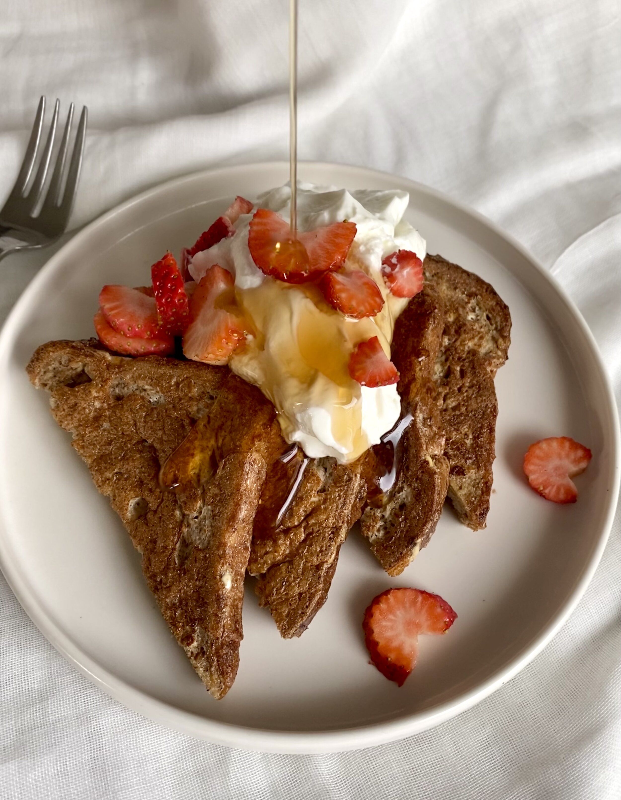

Anabolic French Toast

Description
The best low calorie, fluffy Anabolic Protein French Toast! The inspiration came from the DOCTOR, Greg Doucette, and I made it my own. You will never need any other french toast recipe!
Ingredients
- 3-4 Slices of Bread (ideally high protein bread)
- 4 Egg Whites
- 1 Fat Free Greek Yogurt
- 100g Berries
- Dash of Cinnamon
Steps
- Preheat a large pan to low/medium heat. Whisk together egg whites, cinnamon, stevia and pinch salt. Add egg mixture to a large dish. Add bread and soak in egg mixture for at least 5 minutes. This allows the bread to absorb all the egg whites
- Spray the pan with nonstick spray. Cook french toast for 4-5 minutes per side or until golden brown and fluffy. Cooking low and slow is the best way to cook the egg whites all the way through and make the French toast thick and fluffy
- While french toast is cooking, mix together the Greek yogurt and the Berries
- Top cooked french toast with the mixture and other optional toppings - vanilla protein cream peanut butter, sugar free maple syrup and/or any other desired toppings.